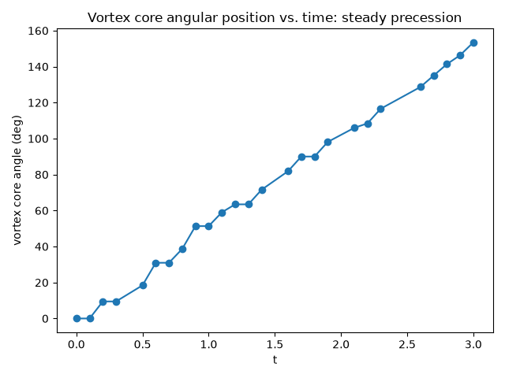

Note
Go to the end to download the full example code.
A vortex genuinely precessing in real time#
gpe_relax() only ever finds a
stationary vortex state, by imaginary-time relaxation – it cannot show
what a vortex actually does as time passes.
gpe_evolve() solves the same
Gross-Pitaevskii equation in genuine real (lab-frame) time instead,
with \(V(\mathbf{r}) = \tfrac12(x^2+y^2)\) the harmonic trap: seeded off-center in this trapped condensate, a single quantized vortex physically precesses around the trap center, driven by the local density gradient it sits in – the dynamical motion that, in a rotating condensate, carries a newly nucleated vortex into its place in the crystalline Abrikosov-like lattice.
import matplotlib.pyplot as plt
import numpy as np
from physicskit.fields import animate_density_2d, count_vortices, gpe_evolve, gpe_imprint_vortex, gpe_relax, harmonic_trap_grid
Relax a vortex-free ground state, then imprint one vortex off-center#
Real-time propagation: the vortex is not held in place, it precesses#
Track the vortex core’s angular position frame by frame: it sweeps out
a genuine orbit around the trap center rather than sitting still, the
real-time dynamics gpe_relax() cannot show. An off-center vortex
sits in a region where the background condensate density is already
well below the trap’s peak density, so a lower-than-default
density_threshold is needed to keep the vortex’s own (genuine,
expected) local density dip from being masked out along with it.
detected_times, detected_angles = [], []
for t, frame in zip(times, frames):
winding = count_vortices(frame, density_threshold=1e-3)
if not np.any(winding):
continue
idx = np.unravel_index(np.argmax(np.abs(winding)), winding.shape)
detected_times.append(t)
detected_angles.append(np.arctan2(Y[idx], X[idx]))
detected_angles = np.unwrap(detected_angles)
extent = (X.min(), X.max(), Y.min(), Y.max())
anim = animate_density_2d(frames, extent=extent, times=times)
plt.show()
To save the animation to a file instead of (or in addition to) displaying it interactively, use e.g.:
anim.save("vortex_precession.gif", writer="pillow", fps=15)
print(
f"vortex angular position: t={detected_times[0]:.2f} -> {np.degrees(detected_angles[0]):.1f} deg, "
f"t={detected_times[-1]:.2f} -> {np.degrees(detected_angles[-1]):.1f} deg"
)
print(f"total angle swept (precession, not a stationary vortex): {np.degrees(detected_angles[-1] - detected_angles[0]):.1f} deg")
vortex angular position: t=0.00 -> 0.0 deg, t=3.00 -> 153.4 deg
total angle swept (precession, not a stationary vortex): 153.4 deg
The precession, plotted directly#
The animation shows the vortex core drifting frame by frame, but only a plot of the already-detected core angle against time shows the actual precession rate directly: an essentially straight line (constant angular velocity), the signature of steady precession rather than random wandering or a decaying orbit.
fig2, ax2 = plt.subplots()
ax2.plot(detected_times, np.degrees(detected_angles), "o-")
ax2.set_xlabel("t")
ax2.set_ylabel("vortex core angle (deg)")
ax2.set_title("Vortex core angular position vs. time: steady precession")
fig2.tight_layout()

Check#
An off-center vortex in a trapped condensate precesses steadily in one direction around the trap center.
angles = np.asarray(detected_angles)
assert np.all(np.diff(angles) >= -1e-9) and angles[-1] - angles[0] > np.pi / 2
Total running time of the script: (0 minutes 8.540 seconds)